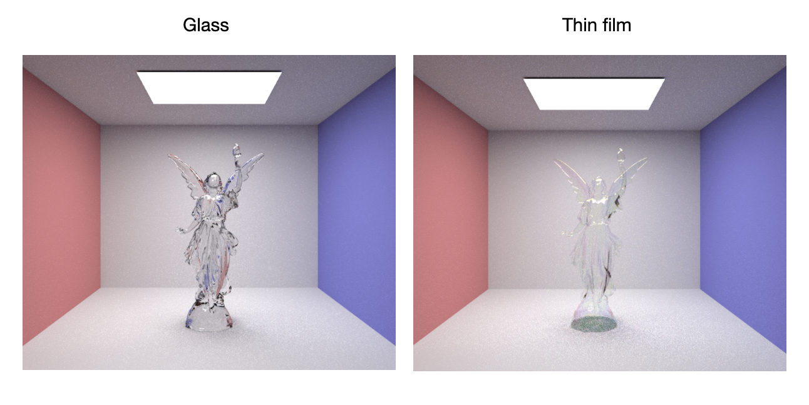

Project Description:
We updated our pathtracer to model light interactions with thin film surfaces– namely thin film interference– to render iridescent objects.
Abstract:
In this project, we attempt to realistically render lightwave interference from interacting with thin film material, resulting in the phenomenon of iridescence. By modifying our pathtracer to include a thin film BSDF that estimates the reflection and refraction intensity of interfering lightwaves at a specific wavelength, we were able to sample the intensity at each color channel, combining them together to achieve the coloring that is characteristic of iridescent objects. This implementation requires us to represent light not as a particle, but as a wave with a phase, magnitude, and wavelength at a miniscule level.

|
Technical Approach:
Our approach began with our existing pathtracer implementation from project 3. To derive our intensity estimation equations, it is crucial to first understand how the phenomenon of iridescence occurs, as described in the work done by Bacterius. To properly understand iridescence, we must first begin thinking of light as a wave with a phase, magnitude, and wavelength instead of a particle or photon. As light approaches a thin film surface as shown in Figure 1, there are several different paths it can take. It can encounter the thin film and immediately reflect off, refract into the thin film, reflect internally a number of times and then refract out into the external medium, or it can refract into the thin film, reflect internally a number of times before refracting into the internal medium. Because of this pattern of interaction with the incoming lightwaves, the exiting waves of the internal and external mediums are all parallel and very close together, resulting in interference. In reality, there are often multiple layers of thin film that light interacts with; however, we found that a single layer provided a realistic enough rendering.
Interference of lightwaves can either be constructive or destructive. Totally constructive interference happens when the phases align, with the resulting wave has the same phase and a summed magnitude. On the other hand, totally destructive interference occurs when the phases are exactly out of alignment, with their magnitudes cancelling each other out resulting in no signal. For thin film interference, it is usually a combination of constructive and destructive interference. This means that the magnitude of the resulting exiting lightwave will vary depending on the wavelength of the light. Therefore, some colors will have higher intensity and some lower, with the end result being changes in color across the surface based on viewing angle.
|
|
Our approach to modifying our project 3 pathtracer involved creating a new BSDF type for thin film material that would use the Fresnel equations to find the ratio of reflected and transmitted waves and estimate their interference as described by Bacterius. The following are the reflection and transmission coefficients for s and p polarized light respectively:
We will refer to the amplitude transmission and reflection coefficients for a wave going from medium i to medium j as i|jand i|j respectively. Lightwave R0 in Figure 2 would have amplitude 0|1. Similarly, lightwave T0 would have amplitude 0|11|2, lightwave T1 would have amplitude 0|11|21|01|2 and so on. This leads us to the general formula for the amplitude of the kth transmitted wave:
However, in addition to the amplitude, it is also necessary to find the phase changes to account for the interference. The phase change for the kth wave is calculated as follows:
where represents the width of the thin film layer, is the wavelength of the lightwave, and is meant to account for the 180 degree phase shift a lightwave experiences when it reflects off a surface with a higher refractive index. Thus, to get the intensity of the transmitted light we sum together waves and multiply by a constant to account for changes in intensity due to changes in the refractive index and angle upon transmission. The latter representation was achieved by using the geometric series sum formula:
We know from conservation of energy that IT + IR = 1, thus we were able to calculate both values for both s and p polarization. We made the assumption that s and p polarized light were equally represented so we took a simple average to find the overall intensities. After writing our function to calculate these intensities, we calculated them for 464nm, 549nm, and 612nm, one for each color channel to create our RGB 3D intensity vector. Then, inspired by Schlick’s approximation that we used in project 3, we performed a weighted coin flip based on the reflected and transmitted intensities to decide whether the ray would be reflected or transmitted.
We also modified .dae files from project 3 like CBspheres, dragon, and lucy to contain thin film material and effects including information about thickness and index of refraction. We then altered the collada parser to parse our new thin film effects.
Results:
With the above implementation, we are able to produce realistic renderings and approximate the unique coloring associated with iridescence. We reproduced several renderings from project 3, instead with thin film material and varying thicknesses.
Intermediate Results:
Before producing our final results, we were met with a few bugs and logic errors. The images below show a rendering of CBdragon.dae, modeled with non-transparent material. We initially set material transmittance to 0, which produced the noisy image on the left. This is because the ray was modeled to either reflect or refract; however, to have reflective material there should only be a reflection array. To address this, we set the reflection probability to 1 and rendered the more accurate dragon on the right.We had also initially set bubble reflectance to 0 and transmittance to 1, producing the dark edge on the bubble in the left image. To resolve this, we set reflectance to 1 and were able to render realistic bubbles.
Final Results:
With these adjustments, we were able to accurately model thin film material and render iridescent objects.
We first modified the spheres in CPspheres.dae, modeling them with thin film material. We also adjusted the sphere positions so they appear to be floating. This created realistic looking bubbles as shown below:
The animation below shows the bubbles rendered with varying thicknesses:
We also rendered CBdragon.dae with non transparent, thin film material. The dragon has colorful, iridescent highlights.
Finally, we rendered CBlucy.dae with thin film material. The two images below show a comparison between CBlucy rendered with glass material (from project 3) versus thin film material, which looks like a bubble.
|  |
References:
Teammate Contributions:
Iris: edited .dae files and collada parser, milestone report, final report abstract and technical approach, helped with presentation content
Billy: coded the BSDF, rendered all the images, minor edits to the reports, helped with presentation content
Nadia: reviewed literature, found relevant resources and related work, final report results, created presentation slides
Chetana: Read and found literature/background on project, worked on milestone report and deliverables, created presentation slides, worked on final report and deliverables